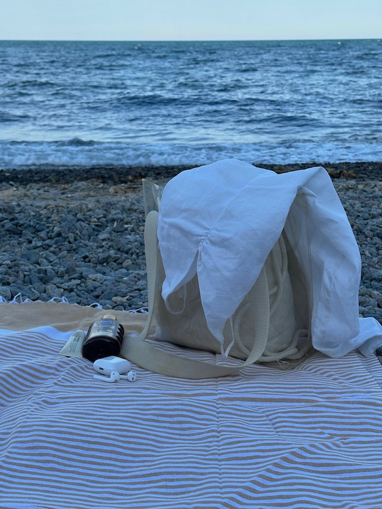
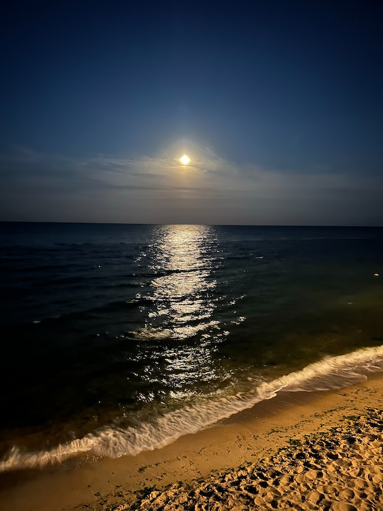
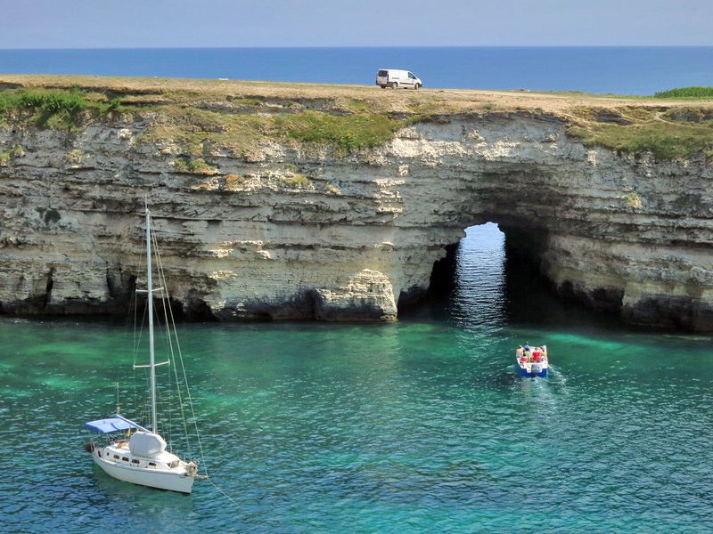
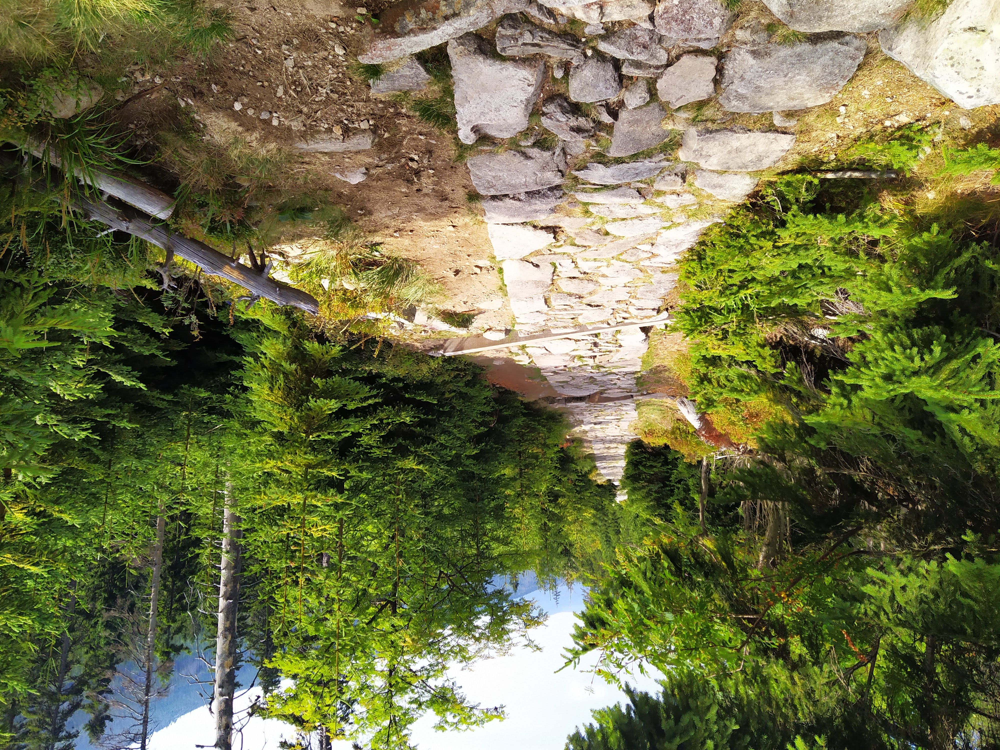
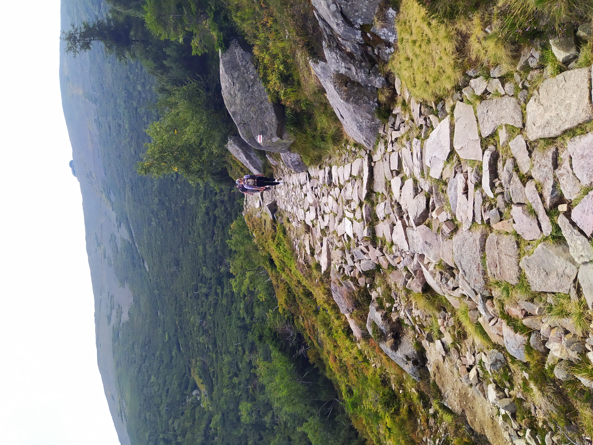
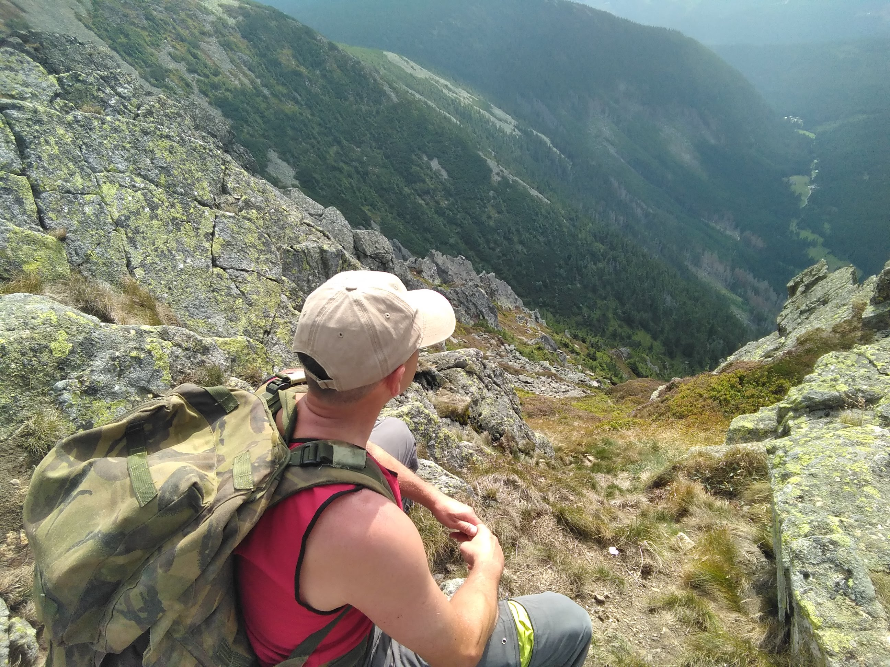
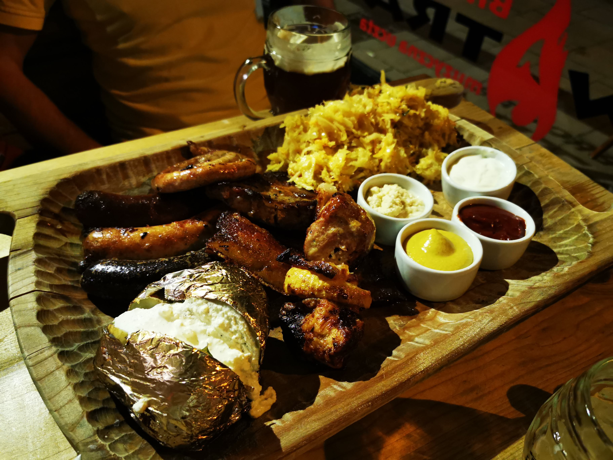
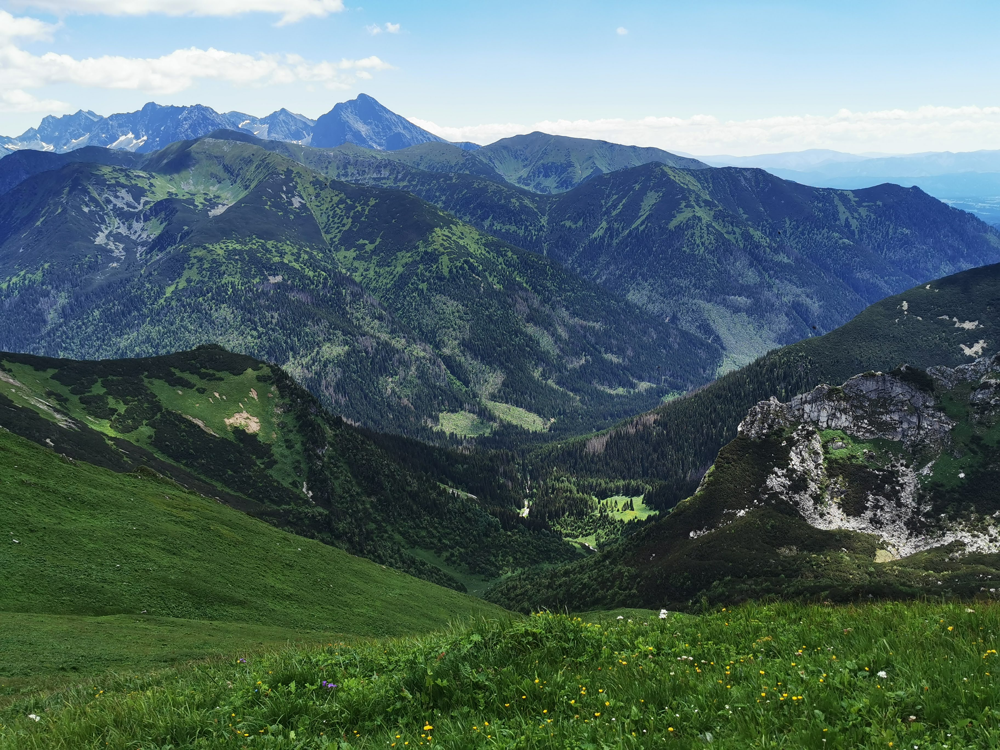
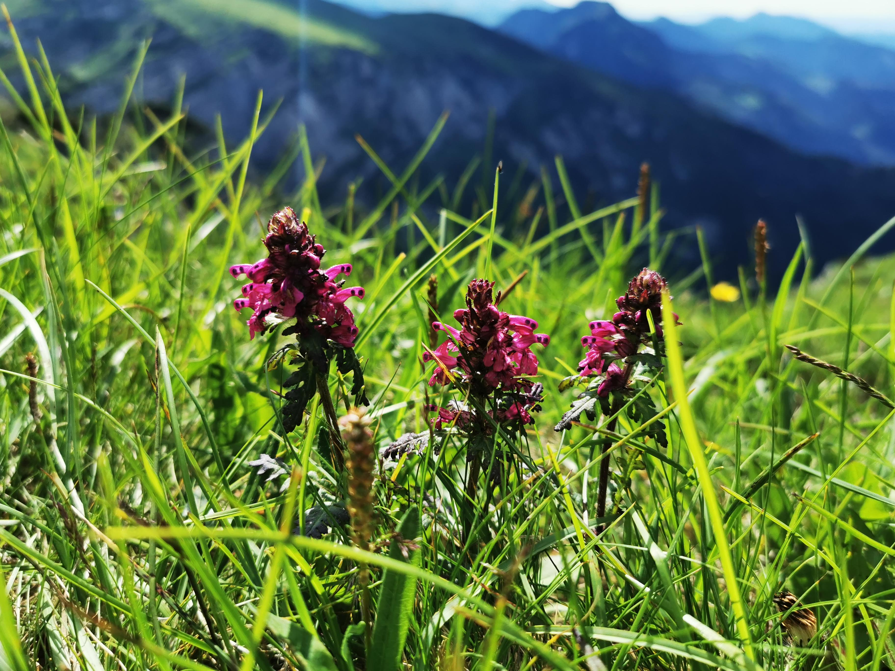

Наше життя таке, яким його роблять наші думки.
Марк Аврелій
-
Про себе
Мене звати Олексій. Мені 50. Виріс я у мальовничому містечку Рахів що на Закарпатті. Багато разів міняв своє місце проживання . Може тому у мене є друзі майже в кожному куточку України. Більшість часу працював будівельником але так і не займався тим що було до серця блище . І лише зараз приділяю більше часу справжньому життю - гори , велік , лодка і друзі. Маю математичні схильності . Люблю задачі ))). Верстку я помітив на Youtube , випадково. Хворів , мав вільний час і зайнявся безкоштовним курсом . І я себе знайшов . Це те шо мені пасує за моїм складом розуму. І ось я з Вами !
-
Вільний час та зацікавлення
Цікавлюсь електронікою, ремонтую ноутбуки , побутову техніку. Займаюсь фотографією , монтую фільми. Звичайно не професійно - так, для себе . Мої роботи ocь тут(обери лінк):.
-
Поіздки та відпочинки
-
Kрим Україна
   -
Kарконоші Польща
Карпач
Шклярська Поремба
Єленя Гора
-
Татри Польща
-
Закопане
Закопане — місто в південній Польщі, біля підніжжя Татр. Адміністративний центр Татранського повіту Малопольського воєводства. Закопане є найбільшим населеним пунктом у підніжжі Татр, значним центром зимових видів спорту. Щорічно на горі Кроква проводиться Кубок світу зі стрибків на лижах з трампліну.
-
Крокієв
Чарівний район Крокієв найбільш відомий завдяки Великому Крокієву, найбільшому в Польщі пагорбу з трампліном, розташованому на лісистих схилах гірськолижного й зимового спортивного комплексу в Татрах. На околицях є обсаджені деревами житлові вулиці й ресторани рустикального стилю, де подають традиційні регіональні страви. Серед інших визначних об’єктів – Татшанський мінізоопарк, а також Татшанський музей і художня галерея, розташовані в дерев’яній віллі.
-
Гронік
Гронік набагато спокійніше, ніж Закопане. Хоча село близько межує зі столицею Татр – так що, йдучи від центру Закопаного, неможливо помітити, де ця межа, – але відчувається, що тут все трохи повільніше. Гронік сповнений красою. Там є багато місць для відпочинку, де можна залишитися на ніч, а також є чудові таверни та заклади, де можна спробувати місцеву традиційну кухню.
-
-
-
Oсвіта та навички
- середня школа #4 м.Рахів
- Львівський технікум промислової автоматики
- Самоосвіта